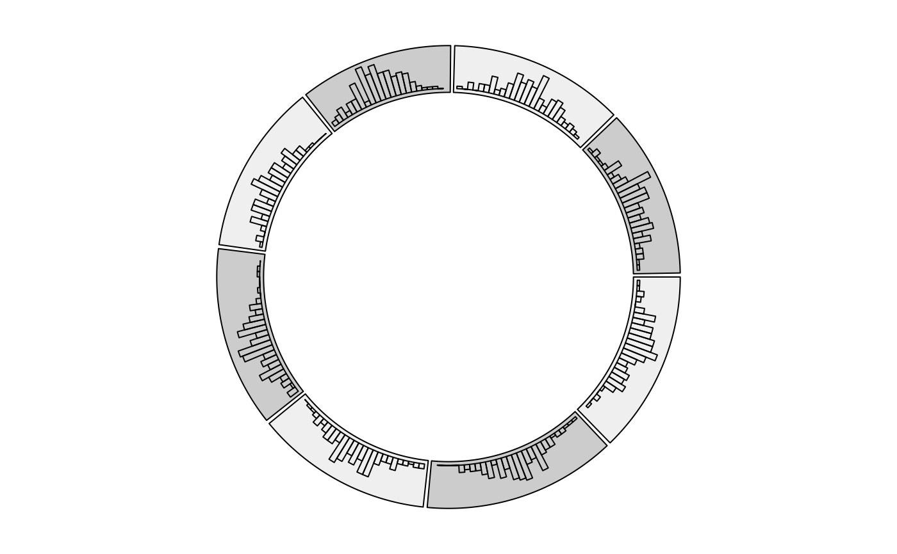

Object ccTrack will call the function circlize::circos.trackHist while drawing.
Arguments
- ...
Arguments passed on to
circlize::circos.trackHistsectorsA
factoror a character vector which represents the categories of datafactorsThe same as
sectors. It will be removed in future versions.xData on the x-axis
track.indexIndex for the track which is going to be updated. Setting it to
NULLmeans creating the plotting regions in the next newest track.track.heightHeight of the track. It is the percentage to the radius of the unit circle. If to update a track, this argument is disabled.
ylimRanges on y-direction. By default,
ylimis calculated automatically.force.ylimWhether to force all cells in the track to share the same
ylim.colFilled color for histogram
borderBorder color for histogram
ltyLine style for histogram
lwdLine width for histogram
bg.colBackground color for the plotting regions
bg.borderColor for the border of the plotting regions
bg.ltyLine style for the border of the plotting regions
bg.lwdLine width for the border of the plotting regions
breakssee
histinclude.lowestsee
histrightsee
histdraw.densitywhether draw density lines instead of histogram bars.
areawhether to fill the area below the density lines. If it is set to
TRUE,colcontrols the filled color in the area andbordercontrols color of the line.bin.sizesize of the bins of the histogram
Value
Object ccTrack
Examples
library(circlizePlus)
n = 1000
df = data.frame(sectors = sample(letters[1:8], n, replace = TRUE),
x = rnorm(n), y = runif(n))
library(circlizePlus)
par1=ccPar("track.height" = 0.1)
cc=ccPlot(sectors = df$sectors, x = df$x) + par1;bgcol = rep(c("#EFEFEF", "#CCCCCC"), 4)
track2 = ccTrackHist(df$sectors, df$x, bin.size = 0.2, bg.col = bgcol, col = NA)
cc=cc+track2
cc

circos.clear()